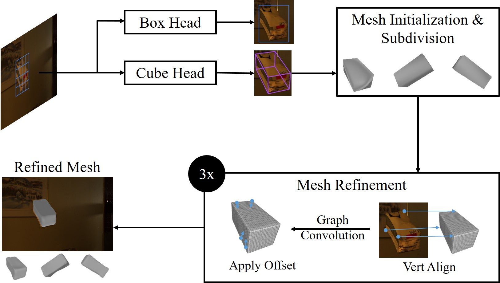

We focus on enabling damage and tampering detection in logistics and tackle the problem of 3D shape reconstruction of potentially damaged parcels. As input we utilize single RGB images, which corresponds to use-cases where only simple handheld devices are available, e.g. for postmen during delivery or clients on delivery.
We present a novel synthetic dataset, named Parcel3D, that is based on the Google Scanned Objects (GSO) dataset and consists of more than 13,000 images of parcels with full 3D annotations. The dataset contains intact, i.e. cuboid-shaped, parcels and damaged parcels, which were generated in simulations. We work towards detecting mishandling of parcels by presenting a novel architecture called CubeRefine R-CNN, which combines estimating a 3D bounding box with an iterative mesh refinement.
We benchmark our approach on Parcel3D and an existing dataset of cuboid-shaped parcels in real-world scenarios. Our results show, that while training on Parcel3D enables transfer to the real world, enabling reliable deployment in real-world scenarios is still challenging. CubeRefine R-CNN yields competitive performance in terms of Mesh AP and is the only model that directly enables deformation assessment by 3D mesh comparison and tampering detection by comparing viewpoint invariant parcel side surface representations. Dataset and code are available on this website.

Figure: We take an RGB image as input and use Cube
R-CNN's Cube Head to estimate a 3D bounding box. This bounding
box is subdivided and serves as initial mesh, which is refined
by an iterative mesh refinement. For training and evaluation we
present Parcel3D, a novel dataset of normal and damaged parcels
with full 3D annotations. (c) IEEE 2023.
@inproceedings{naumannParcel3DShapeReconstruction2023,
author = {Naumann, Alexander and Hertlein, Felix and D\"orr, Laura and Furmans, Kai},
title = {Parcel3D: Shape Reconstruction From Single RGB Images for Applications in Transportation Logistics},
booktitle = {Proceedings of the IEEE/CVF Conference on Computer Vision and Pattern Recognition (CVPR) Workshops},
month = {June},
year = {2023},
pages = {4402-4412}
}